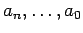
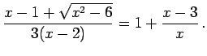

Inhalt Index DeskTop Bronstein

 Arithmetik Algebraische und transzendente Gleichungen Umformung algebraischer Gleichungen auf die Normalform
Arithmetik Algebraische und transzendente Gleichungen Umformung algebraischer Gleichungen auf die Normalform


Die in der Gleichung
enthaltene Veränderliche x wird Unbekannte genannt, die speziellen Werte  der Veränderlichen, für die die Gleichung erfüllt wird, sind die Wurzeln oder Lösungen der Gleichung. Zwei Gleichungen sind äquivalent, wenn sie genau die gleichen Wurzeln besitzen.
der Veränderlichen, für die die Gleichung erfüllt wird, sind die Wurzeln oder Lösungen der Gleichung. Zwei Gleichungen sind äquivalent, wenn sie genau die gleichen Wurzeln besitzen.
Eine algebraische Gleichung liegt vor, wenn jede der darin enthaltenen Funktionen F(x) und f(x) algebraisch, d.h. rational oder irrational ist; eine von ihnen kann auch eine Konstante sein. Jede algebraische Gleichung kann durch algebraische Umformungen auf die Normalform
gebracht werden, die die gleichen Wurzeln wie die Ausgangsform besitzt, aber unter Umständen einige überzählige. Der Koeffizient an wird oft auf den Wert 1 gebracht; im übrigen werden die Koeffizienten  hier und im weiteren als reell vorausgesetzt, anderenfalls wird besonders darauf aufmerksam gemacht.
Der Exponent n wird der Grad der Gleichung genannt.
| Beispiel |
|
Gesucht ist die Normalform der Gleichung  Schrittweise Umformungen: |